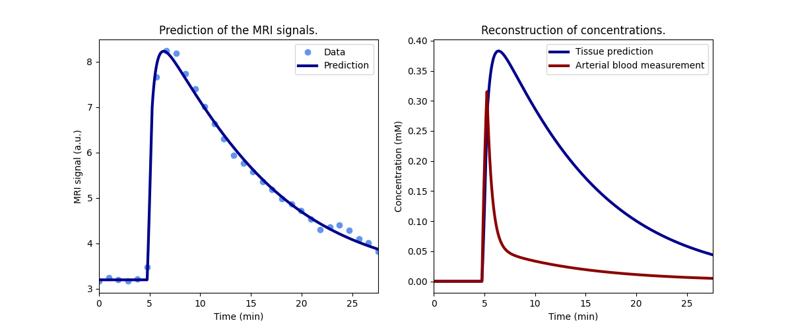

Note
Go to the end to download the full example code.
Preclinical - effect on liver function of 6 test drugs#
This example illustrates the use of Liver for fitting of signals
measured in liver. The use case is provided by the liver work package of the
TRISTAN project which develops imaging
biomarkers for drug safety assessment. The data and analysis were first
published in Melillo et al (2023).
The specific objective of the study was to determine the effect of selected drugs on hepatocellular uptake and excretion of the liver-specific contrast agent gadoxetate. If a drug inhibits uptake into liver cells, then it might cause other drugs to circulate in the blood stream for longer than expected, potentially causing harm to other organs. Alternatively, if a drug inhibits excretion from the liver, then it might cause other drugs to pool in liver cells for much longer than expected, potentially causing liver injury. These so-called drug-drug interactions (DDI’s) pose a significant risk to patients and trial participants. A direct in-vivo measurement of drug effects on liver uptake and excretion can potentially help improve predictions of DDI’s and inform dose setting strategies to reduce the risk.
The study presented here measured gadoxetate uptake and excretion in healthy rats before and after injection of 6 test drugs. Studies were performed in preclinical MRI scanners at 3 different centers and 2 different field strengths. Results demonstrated that two of the tested drugs (rifampicin and cyclosporine) showed strong inhibition of both uptake and excretion. One drug (ketoconazole) inhibited uptake but not excretion. Three drugs (pioglitazone, bosentan and asunaprevir) inhibited excretion but not uptake.
Reference
Melillo N, Scotcher D, Kenna JG, Green C, Hines CDG, Laitinen I, Hockings PD, Ogungbenro K, Gunwhy ER, Sourbron S, et al. Use of In Vivo Imaging and Physiologically-Based Kinetic Modelling to Predict Hepatic Transporter Mediated Drug–Drug Interactions in Rats. Pharmaceutics. 2023; 15(3):896. [DOI]
Setup#
Model definition#
In order to avoid some repetition in this script, we define a function that returns a trained model for a single dataset.
The model uses a standardized, population-average input function and fits for only 2 parameters, fixing all other free parameters to typical values for this rat model:
def tristan_rat(roi, par, **kwargs):
# High-resolution time points for prediction
t = np.arange(0, np.amax(roi['time'])+0.5, 0.5)
# Standard input function
ca = dc.aif_tristan_rat(t, BAT=par['BAT'], duration=par['duration'])
# Liver model with population input function
model = dc.Liver(
# Input parameters
t = t,
ca = ca,
# Acquisition parameters
field_strength = par['field_strength'],
TR = par['TR'],
FA = par['FA'],
n0 = par['n0'],
# Configure as in the TRISTAN-rat study
config = 'TRISTAN-rat',
)
return model.train(roi['time'], roi['liver'], **kwargs)
Check model fit#
Before running the full analysis on all cases, lets illustrate the results by fitting the baseline visit for the first subject. We use maximum verbosity to get some feedback about the iterations:
Iteration Total nfev Cost Cost reduction Step norm Optimality
0 1 4.0351e+01 8.78e+03
1 3 2.4653e+01 1.57e+01 4.50e+02 1.51e+03
2 5 2.0713e+01 3.94e+00 3.37e+02 9.09e+02
3 6 1.3744e+01 6.97e+00 5.84e+02 2.95e+03
4 7 5.6652e+00 8.08e+00 3.67e+01 3.13e+02
5 8 3.6800e+00 1.99e+00 1.86e+02 1.14e+03
6 9 2.3949e-01 3.44e+00 1.58e+01 1.06e+02
7 10 1.9963e-01 3.99e-02 2.99e+00 1.84e-02
8 11 1.9962e-01 3.30e-06 1.03e-01 9.30e-04
`xtol` termination condition is satisfied.
Function evaluations 11, initial cost 4.0351e+01, final cost 1.9962e-01, first-order optimality 9.30e-04.
Plot the results to check that the model has fitted the data:
Print the measured model parameters and any derived parameters and check that standard deviations of measured parameters are small relative to the value, indicating that the parameters are measured reliably:
model.print_params(round_to=3)
--------------------------------
Free parameters with their stdev
--------------------------------
Hepatocellular uptake rate (khe): 0.029 (0.001) mL/sec/cm3
Hepatocellular mean transit time (Th): 192.681 (4.917) sec
----------------------------
Fixed and derived parameters
----------------------------
Hematocrit (H): 0.418
Liver extracellular volume fraction (ve): 0.23 mL/cm3
Biliary tissue excretion rate (Kbh): 0.005 mL/sec/cm3
Hepatocellular tissue uptake rate (Khe): 0.126 mL/sec/cm3
Biliary excretion rate (kbh): 0.004 mL/sec/cm3
Liver extraction fraction (E): 0.569
Hepatic plasma clearance (Ktrans): 0.013 mL/sec/cm3
Fit all data#
Now that we have illustrated an individual result in some detail, we proceed with fitting all the data. Results are stored in a dataframe in long format:
results = []
# Loop over all datasets
for subj in rois.keys():
for visit in rois[subj].keys():
roi = rois[subj][visit]
par = pars[subj][visit]
# Generate a trained model
model = tristan_rat(roi, par, xtol=1e-3)
# Export fitted parameters as lists
rows = model.export_params(type='list')
# Add study, visit and subject info
rows = [row + [par['study'], par['visit'], subj] for row in rows]
# Add to the list of all results
results += rows
# Combine all results into a single dataframe.
cols = ['parameter', 'name', 'value', 'unit', 'stdev', 'study',
'visit', 'subject']
results = pd.DataFrame(results, columns=cols)
# Print all results
print(results.to_string())
parameter name value unit stdev study visit subject
0 H Hematocrit 0.418000 0.000000 5 1 S05-02
1 ve Liver extracellular volume fraction 0.230000 mL/cm3 0.000000 5 1 S05-02
2 khe Hepatocellular uptake rate 0.029071 mL/sec/cm3 0.000697 5 1 S05-02
3 Th Hepatocellular mean transit time 192.680543 sec 4.917299 5 1 S05-02
4 Kbh Biliary tissue excretion rate 0.005190 mL/sec/cm3 0.000000 5 1 S05-02
5 Khe Hepatocellular tissue uptake rate 0.126397 mL/sec/cm3 0.000000 5 1 S05-02
6 kbh Biliary excretion rate 0.003996 mL/sec/cm3 0.000000 5 1 S05-02
7 E Liver extraction fraction 0.569017 0.000000 5 1 S05-02
8 Ktrans Hepatic plasma clearance 0.012529 mL/sec/cm3 0.000000 5 1 S05-02
9 H Hematocrit 0.418000 0.000000 5 2 S05-02
10 ve Liver extracellular volume fraction 0.230000 mL/cm3 0.000000 5 2 S05-02
11 khe Hepatocellular uptake rate 0.016974 mL/sec/cm3 0.000900 5 2 S05-02
12 Th Hepatocellular mean transit time 317.509661 sec 19.223523 5 2 S05-02
13 Kbh Biliary tissue excretion rate 0.003150 mL/sec/cm3 0.000000 5 2 S05-02
14 Khe Hepatocellular tissue uptake rate 0.073802 mL/sec/cm3 0.000000 5 2 S05-02
15 kbh Biliary excretion rate 0.002425 mL/sec/cm3 0.000000 5 2 S05-02
16 E Liver extraction fraction 0.435315 0.000000 5 2 S05-02
17 Ktrans Hepatic plasma clearance 0.009585 mL/sec/cm3 0.000000 5 2 S05-02
18 H Hematocrit 0.418000 0.000000 5 1 S05-03
19 ve Liver extracellular volume fraction 0.230000 mL/cm3 0.000000 5 1 S05-03
20 khe Hepatocellular uptake rate 0.022983 mL/sec/cm3 0.002276 5 1 S05-03
21 Th Hepatocellular mean transit time 154.949009 sec 16.413168 5 1 S05-03
22 Kbh Biliary tissue excretion rate 0.006454 mL/sec/cm3 0.000000 5 1 S05-03
23 Khe Hepatocellular tissue uptake rate 0.099925 mL/sec/cm3 0.000000 5 1 S05-03
24 kbh Biliary excretion rate 0.004969 mL/sec/cm3 0.000000 5 1 S05-03
25 E Liver extraction fraction 0.510709 0.000000 5 1 S05-03
26 Ktrans Hepatic plasma clearance 0.011245 mL/sec/cm3 0.000000 5 1 S05-03
27 H Hematocrit 0.418000 0.000000 5 2 S05-03
28 ve Liver extracellular volume fraction 0.230000 mL/cm3 0.000000 5 2 S05-03
29 khe Hepatocellular uptake rate 0.010343 mL/sec/cm3 0.000682 5 2 S05-03
30 Th Hepatocellular mean transit time 387.056359 sec 30.843056 5 2 S05-03
31 Kbh Biliary tissue excretion rate 0.002584 mL/sec/cm3 0.000000 5 2 S05-03
32 Khe Hepatocellular tissue uptake rate 0.044969 mL/sec/cm3 0.000000 5 2 S05-03
33 kbh Biliary excretion rate 0.001989 mL/sec/cm3 0.000000 5 2 S05-03
34 E Liver extraction fraction 0.319601 0.000000 5 2 S05-03
35 Ktrans Hepatic plasma clearance 0.007037 mL/sec/cm3 0.000000 5 2 S05-03
36 H Hematocrit 0.418000 0.000000 5 1 S05-04
37 ve Liver extracellular volume fraction 0.230000 mL/cm3 0.000000 5 1 S05-04
38 khe Hepatocellular uptake rate 0.017759 mL/sec/cm3 0.000795 5 1 S05-04
39 Th Hepatocellular mean transit time 185.964864 sec 9.040065 5 1 S05-04
40 Kbh Biliary tissue excretion rate 0.005377 mL/sec/cm3 0.000000 5 1 S05-04
41 Khe Hepatocellular tissue uptake rate 0.077215 mL/sec/cm3 0.000000 5 1 S05-04
42 kbh Biliary excretion rate 0.004141 mL/sec/cm3 0.000000 5 1 S05-04
43 E Liver extraction fraction 0.446459 0.000000 5 1 S05-04
44 Ktrans Hepatic plasma clearance 0.009831 mL/sec/cm3 0.000000 5 1 S05-04
45 H Hematocrit 0.418000 0.000000 5 2 S05-04
46 ve Liver extracellular volume fraction 0.230000 mL/cm3 0.000000 5 2 S05-04
47 khe Hepatocellular uptake rate 0.015100 mL/sec/cm3 0.000959 5 2 S05-04
48 Th Hepatocellular mean transit time 206.495388 sec 14.384119 5 2 S05-04
49 Kbh Biliary tissue excretion rate 0.004843 mL/sec/cm3 0.000000 5 2 S05-04
50 Khe Hepatocellular tissue uptake rate 0.065651 mL/sec/cm3 0.000000 5 2 S05-04
51 kbh Biliary excretion rate 0.003729 mL/sec/cm3 0.000000 5 2 S05-04
52 E Liver extraction fraction 0.406794 0.000000 5 2 S05-04
53 Ktrans Hepatic plasma clearance 0.008957 mL/sec/cm3 0.000000 5 2 S05-04
54 H Hematocrit 0.418000 0.000000 5 1 S05-05
55 ve Liver extracellular volume fraction 0.230000 mL/cm3 0.000000 5 1 S05-05
56 khe Hepatocellular uptake rate 0.015636 mL/sec/cm3 0.001193 5 1 S05-05
57 Th Hepatocellular mean transit time 195.399387 sec 16.291207 5 1 S05-05
58 Kbh Biliary tissue excretion rate 0.005118 mL/sec/cm3 0.000000 5 1 S05-05
59 Khe Hepatocellular tissue uptake rate 0.067983 mL/sec/cm3 0.000000 5 1 S05-05
60 kbh Biliary excretion rate 0.003941 mL/sec/cm3 0.000000 5 1 S05-05
61 E Liver extraction fraction 0.415244 0.000000 5 1 S05-05
62 Ktrans Hepatic plasma clearance 0.009143 mL/sec/cm3 0.000000 5 1 S05-05
63 H Hematocrit 0.418000 0.000000 5 2 S05-05
64 ve Liver extracellular volume fraction 0.230000 mL/cm3 0.000000 5 2 S05-05
65 khe Hepatocellular uptake rate 0.014755 mL/sec/cm3 0.000690 5 2 S05-05
66 Th Hepatocellular mean transit time 258.638643 sec 13.498648 5 2 S05-05
67 Kbh Biliary tissue excretion rate 0.003866 mL/sec/cm3 0.000000 5 2 S05-05
68 Khe Hepatocellular tissue uptake rate 0.064151 mL/sec/cm3 0.000000 5 2 S05-05
69 kbh Biliary excretion rate 0.002977 mL/sec/cm3 0.000000 5 2 S05-05
70 E Liver extraction fraction 0.401230 0.000000 5 2 S05-05
71 Ktrans Hepatic plasma clearance 0.008835 mL/sec/cm3 0.000000 5 2 S05-05
72 H Hematocrit 0.418000 0.000000 5 1 S05-06
73 ve Liver extracellular volume fraction 0.230000 mL/cm3 0.000000 5 1 S05-06
74 khe Hepatocellular uptake rate 0.017560 mL/sec/cm3 0.001343 5 1 S05-06
75 Th Hepatocellular mean transit time 172.510596 sec 14.285767 5 1 S05-06
76 Kbh Biliary tissue excretion rate 0.005797 mL/sec/cm3 0.000000 5 1 S05-06
77 Khe Hepatocellular tissue uptake rate 0.076347 mL/sec/cm3 0.000000 5 1 S05-06
78 kbh Biliary excretion rate 0.004463 mL/sec/cm3 0.000000 5 1 S05-06
79 E Liver extraction fraction 0.443667 0.000000 5 1 S05-06
80 Ktrans Hepatic plasma clearance 0.009769 mL/sec/cm3 0.000000 5 1 S05-06
81 H Hematocrit 0.418000 0.000000 5 2 S05-06
82 ve Liver extracellular volume fraction 0.230000 mL/cm3 0.000000 5 2 S05-06
83 khe Hepatocellular uptake rate 0.019193 mL/sec/cm3 0.001364 5 2 S05-06
84 Th Hepatocellular mean transit time 208.782417 sec 16.153388 5 2 S05-06
85 Kbh Biliary tissue excretion rate 0.004790 mL/sec/cm3 0.000000 5 2 S05-06
86 Khe Hepatocellular tissue uptake rate 0.083450 mL/sec/cm3 0.000000 5 2 S05-06
87 kbh Biliary excretion rate 0.003688 mL/sec/cm3 0.000000 5 2 S05-06
88 E Liver extraction fraction 0.465719 0.000000 5 2 S05-06
89 Ktrans Hepatic plasma clearance 0.010255 mL/sec/cm3 0.000000 5 2 S05-06
90 H Hematocrit 0.418000 0.000000 10 1 S10-01
91 ve Liver extracellular volume fraction 0.230000 mL/cm3 0.000000 10 1 S10-01
92 khe Hepatocellular uptake rate 0.032535 mL/sec/cm3 0.002453 10 1 S10-01
93 Th Hepatocellular mean transit time 204.527816 sec 16.360118 10 1 S10-01
94 Kbh Biliary tissue excretion rate 0.004889 mL/sec/cm3 0.000000 10 1 S10-01
95 Khe Hepatocellular tissue uptake rate 0.141456 mL/sec/cm3 0.000000 10 1 S10-01
96 kbh Biliary excretion rate 0.003765 mL/sec/cm3 0.000000 10 1 S10-01
97 E Liver extraction fraction 0.596381 0.000000 10 1 S10-01
98 Ktrans Hepatic plasma clearance 0.013132 mL/sec/cm3 0.000000 10 1 S10-01
99 H Hematocrit 0.418000 0.000000 10 2 S10-01
100 ve Liver extracellular volume fraction 0.230000 mL/cm3 0.000000 10 2 S10-01
101 khe Hepatocellular uptake rate 0.010304 mL/sec/cm3 0.000350 10 2 S10-01
102 Th Hepatocellular mean transit time 411.014284 sec 17.169767 10 2 S10-01
103 Kbh Biliary tissue excretion rate 0.002433 mL/sec/cm3 0.000000 10 2 S10-01
104 Khe Hepatocellular tissue uptake rate 0.044799 mL/sec/cm3 0.000000 10 2 S10-01
105 kbh Biliary excretion rate 0.001873 mL/sec/cm3 0.000000 10 2 S10-01
106 E Liver extraction fraction 0.318779 0.000000 10 2 S10-01
107 Ktrans Hepatic plasma clearance 0.007019 mL/sec/cm3 0.000000 10 2 S10-01
108 H Hematocrit 0.418000 0.000000 10 1 S10-02
109 ve Liver extracellular volume fraction 0.230000 mL/cm3 0.000000 10 1 S10-02
110 khe Hepatocellular uptake rate 0.025874 mL/sec/cm3 0.001773 10 1 S10-02
111 Th Hepatocellular mean transit time 261.575446 sec 19.579156 10 1 S10-02
112 Kbh Biliary tissue excretion rate 0.003823 mL/sec/cm3 0.000000 10 1 S10-02
113 Khe Hepatocellular tissue uptake rate 0.112497 mL/sec/cm3 0.000000 10 1 S10-02
114 kbh Biliary excretion rate 0.002944 mL/sec/cm3 0.000000 10 1 S10-02
115 E Liver extraction fraction 0.540249 0.000000 10 1 S10-02
116 Ktrans Hepatic plasma clearance 0.011896 mL/sec/cm3 0.000000 10 1 S10-02
117 H Hematocrit 0.418000 0.000000 10 2 S10-02
118 ve Liver extracellular volume fraction 0.230000 mL/cm3 0.000000 10 2 S10-02
119 khe Hepatocellular uptake rate 0.026978 mL/sec/cm3 0.001879 10 2 S10-02
120 Th Hepatocellular mean transit time 346.418894 sec 27.421680 10 2 S10-02
121 Kbh Biliary tissue excretion rate 0.002887 mL/sec/cm3 0.000000 10 2 S10-02
122 Khe Hepatocellular tissue uptake rate 0.117297 mL/sec/cm3 0.000000 10 2 S10-02
123 kbh Biliary excretion rate 0.002223 mL/sec/cm3 0.000000 10 2 S10-02
124 E Liver extraction fraction 0.550609 0.000000 10 2 S10-02
125 Ktrans Hepatic plasma clearance 0.012124 mL/sec/cm3 0.000000 10 2 S10-02
126 H Hematocrit 0.418000 0.000000 10 1 S10-03
127 ve Liver extracellular volume fraction 0.230000 mL/cm3 0.000000 10 1 S10-03
128 khe Hepatocellular uptake rate 0.036652 mL/sec/cm3 0.002989 10 1 S10-03
129 Th Hepatocellular mean transit time 192.444917 sec 16.496094 10 1 S10-03
130 Kbh Biliary tissue excretion rate 0.005196 mL/sec/cm3 0.000000 10 1 S10-03
131 Khe Hepatocellular tissue uptake rate 0.159357 mL/sec/cm3 0.000000 10 1 S10-03
132 kbh Biliary excretion rate 0.004001 mL/sec/cm3 0.000000 10 1 S10-03
133 E Liver extraction fraction 0.624705 0.000000 10 1 S10-03
134 Ktrans Hepatic plasma clearance 0.013755 mL/sec/cm3 0.000000 10 1 S10-03
135 H Hematocrit 0.418000 0.000000 10 2 S10-03
136 ve Liver extracellular volume fraction 0.230000 mL/cm3 0.000000 10 2 S10-03
137 khe Hepatocellular uptake rate 0.033281 mL/sec/cm3 0.001951 10 2 S10-03
138 Th Hepatocellular mean transit time 254.130397 sec 15.998477 10 2 S10-03
139 Kbh Biliary tissue excretion rate 0.003935 mL/sec/cm3 0.000000 10 2 S10-03
140 Khe Hepatocellular tissue uptake rate 0.144702 mL/sec/cm3 0.000000 10 2 S10-03
141 kbh Biliary excretion rate 0.003030 mL/sec/cm3 0.000000 10 2 S10-03
142 E Liver extraction fraction 0.601829 0.000000 10 2 S10-03
143 Ktrans Hepatic plasma clearance 0.013252 mL/sec/cm3 0.000000 10 2 S10-03
144 H Hematocrit 0.418000 0.000000 10 1 S10-04
145 ve Liver extracellular volume fraction 0.230000 mL/cm3 0.000000 10 1 S10-04
146 khe Hepatocellular uptake rate 0.034455 mL/sec/cm3 0.003410 10 1 S10-04
147 Th Hepatocellular mean transit time 221.622695 sec 23.277153 10 1 S10-04
148 Kbh Biliary tissue excretion rate 0.004512 mL/sec/cm3 0.000000 10 1 S10-04
149 Khe Hepatocellular tissue uptake rate 0.149806 mL/sec/cm3 0.000000 10 1 S10-04
150 kbh Biliary excretion rate 0.003474 mL/sec/cm3 0.000000 10 1 S10-04
151 E Liver extraction fraction 0.610107 0.000000 10 1 S10-04
152 Ktrans Hepatic plasma clearance 0.013434 mL/sec/cm3 0.000000 10 1 S10-04
153 H Hematocrit 0.418000 0.000000 10 2 S10-04
154 ve Liver extracellular volume fraction 0.230000 mL/cm3 0.000000 10 2 S10-04
155 khe Hepatocellular uptake rate 0.027413 mL/sec/cm3 0.001589 10 2 S10-04
156 Th Hepatocellular mean transit time 249.352610 sec 15.677852 10 2 S10-04
157 Kbh Biliary tissue excretion rate 0.004010 mL/sec/cm3 0.000000 10 2 S10-04
158 Khe Hepatocellular tissue uptake rate 0.119189 mL/sec/cm3 0.000000 10 2 S10-04
159 kbh Biliary excretion rate 0.003088 mL/sec/cm3 0.000000 10 2 S10-04
160 E Liver extraction fraction 0.554563 0.000000 10 2 S10-04
161 Ktrans Hepatic plasma clearance 0.012211 mL/sec/cm3 0.000000 10 2 S10-04
162 H Hematocrit 0.418000 0.000000 10 1 S10-05
163 ve Liver extracellular volume fraction 0.230000 mL/cm3 0.000000 10 1 S10-05
164 khe Hepatocellular uptake rate 0.032610 mL/sec/cm3 0.002460 10 1 S10-05
165 Th Hepatocellular mean transit time 203.726712 sec 16.301197 10 1 S10-05
166 Kbh Biliary tissue excretion rate 0.004909 mL/sec/cm3 0.000000 10 1 S10-05
167 Khe Hepatocellular tissue uptake rate 0.141781 mL/sec/cm3 0.000000 10 1 S10-05
168 kbh Biliary excretion rate 0.003780 mL/sec/cm3 0.000000 10 1 S10-05
169 E Liver extraction fraction 0.596933 0.000000 10 1 S10-05
170 Ktrans Hepatic plasma clearance 0.013144 mL/sec/cm3 0.000000 10 1 S10-05
171 H Hematocrit 0.418000 0.000000 10 2 S10-05
172 ve Liver extracellular volume fraction 0.230000 mL/cm3 0.000000 10 2 S10-05
173 khe Hepatocellular uptake rate 0.034053 mL/sec/cm3 0.002112 10 2 S10-05
174 Th Hepatocellular mean transit time 257.355168 sec 17.137480 10 2 S10-05
175 Kbh Biliary tissue excretion rate 0.003886 mL/sec/cm3 0.000000 10 2 S10-05
176 Khe Hepatocellular tissue uptake rate 0.148055 mL/sec/cm3 0.000000 10 2 S10-05
177 kbh Biliary excretion rate 0.002992 mL/sec/cm3 0.000000 10 2 S10-05
178 E Liver extraction fraction 0.607306 0.000000 10 2 S10-05
179 Ktrans Hepatic plasma clearance 0.013372 mL/sec/cm3 0.000000 10 2 S10-05
180 H Hematocrit 0.418000 0.000000 10 1 S10-06
181 ve Liver extracellular volume fraction 0.230000 mL/cm3 0.000000 10 1 S10-06
182 khe Hepatocellular uptake rate 0.039860 mL/sec/cm3 0.002835 10 1 S10-06
183 Th Hepatocellular mean transit time 225.726632 sec 16.897259 10 1 S10-06
184 Kbh Biliary tissue excretion rate 0.004430 mL/sec/cm3 0.000000 10 1 S10-06
185 Khe Hepatocellular tissue uptake rate 0.173305 mL/sec/cm3 0.000000 10 1 S10-06
186 kbh Biliary excretion rate 0.003411 mL/sec/cm3 0.000000 10 1 S10-06
187 E Liver extraction fraction 0.644162 0.000000 10 1 S10-06
188 Ktrans Hepatic plasma clearance 0.014184 mL/sec/cm3 0.000000 10 1 S10-06
189 H Hematocrit 0.418000 0.000000 10 2 S10-06
190 ve Liver extracellular volume fraction 0.230000 mL/cm3 0.000000 10 2 S10-06
191 khe Hepatocellular uptake rate 0.036788 mL/sec/cm3 0.002694 10 2 S10-06
192 Th Hepatocellular mean transit time 268.628332 sec 21.101895 10 2 S10-06
193 Kbh Biliary tissue excretion rate 0.003723 mL/sec/cm3 0.000000 10 2 S10-06
194 Khe Hepatocellular tissue uptake rate 0.159948 mL/sec/cm3 0.000000 10 2 S10-06
195 kbh Biliary excretion rate 0.002866 mL/sec/cm3 0.000000 10 2 S10-06
196 E Liver extraction fraction 0.625572 0.000000 10 2 S10-06
197 Ktrans Hepatic plasma clearance 0.013774 mL/sec/cm3 0.000000 10 2 S10-06
198 H Hematocrit 0.418000 0.000000 9 1 S09-01
199 ve Liver extracellular volume fraction 0.230000 mL/cm3 0.000000 9 1 S09-01
200 khe Hepatocellular uptake rate 0.019960 mL/sec/cm3 0.000712 9 1 S09-01
201 Th Hepatocellular mean transit time 374.868102 sec 15.694085 9 1 S09-01
202 Kbh Biliary tissue excretion rate 0.002668 mL/sec/cm3 0.000000 9 1 S09-01
203 Khe Hepatocellular tissue uptake rate 0.086781 mL/sec/cm3 0.000000 9 1 S09-01
204 kbh Biliary excretion rate 0.002054 mL/sec/cm3 0.000000 9 1 S09-01
205 E Liver extraction fraction 0.475470 0.000000 9 1 S09-01
206 Ktrans Hepatic plasma clearance 0.010469 mL/sec/cm3 0.000000 9 1 S09-01
207 H Hematocrit 0.418000 0.000000 9 2 S09-01
208 ve Liver extracellular volume fraction 0.230000 mL/cm3 0.000000 9 2 S09-01
209 khe Hepatocellular uptake rate 0.019058 mL/sec/cm3 0.000892 9 2 S09-01
210 Th Hepatocellular mean transit time 332.438023 sec 17.831826 9 2 S09-01
211 Kbh Biliary tissue excretion rate 0.003008 mL/sec/cm3 0.000000 9 2 S09-01
212 Khe Hepatocellular tissue uptake rate 0.082861 mL/sec/cm3 0.000000 9 2 S09-01
213 kbh Biliary excretion rate 0.002316 mL/sec/cm3 0.000000 9 2 S09-01
214 E Liver extraction fraction 0.463958 0.000000 9 2 S09-01
215 Ktrans Hepatic plasma clearance 0.010216 mL/sec/cm3 0.000000 9 2 S09-01
216 H Hematocrit 0.418000 0.000000 9 1 S09-02
217 ve Liver extracellular volume fraction 0.230000 mL/cm3 0.000000 9 1 S09-02
218 khe Hepatocellular uptake rate 0.017014 mL/sec/cm3 0.001283 9 1 S09-02
219 Th Hepatocellular mean transit time 232.394677 sec 19.287626 9 1 S09-02
220 Kbh Biliary tissue excretion rate 0.004303 mL/sec/cm3 0.000000 9 1 S09-02
221 Khe Hepatocellular tissue uptake rate 0.073975 mL/sec/cm3 0.000000 9 1 S09-02
222 kbh Biliary excretion rate 0.003313 mL/sec/cm3 0.000000 9 1 S09-02
223 E Liver extraction fraction 0.435892 0.000000 9 1 S09-02
224 Ktrans Hepatic plasma clearance 0.009598 mL/sec/cm3 0.000000 9 1 S09-02
225 H Hematocrit 0.418000 0.000000 9 2 S09-02
226 ve Liver extracellular volume fraction 0.230000 mL/cm3 0.000000 9 2 S09-02
227 khe Hepatocellular uptake rate 0.022622 mL/sec/cm3 0.001489 9 2 S09-02
228 Th Hepatocellular mean transit time 327.015902 sec 24.422870 9 2 S09-02
229 Kbh Biliary tissue excretion rate 0.003058 mL/sec/cm3 0.000000 9 2 S09-02
230 Khe Hepatocellular tissue uptake rate 0.098356 mL/sec/cm3 0.000000 9 2 S09-02
231 kbh Biliary excretion rate 0.002355 mL/sec/cm3 0.000000 9 2 S09-02
232 E Liver extraction fraction 0.506751 0.000000 9 2 S09-02
233 Ktrans Hepatic plasma clearance 0.011158 mL/sec/cm3 0.000000 9 2 S09-02
234 H Hematocrit 0.418000 0.000000 9 1 S09-03
235 ve Liver extracellular volume fraction 0.230000 mL/cm3 0.000000 9 1 S09-03
236 khe Hepatocellular uptake rate 0.028221 mL/sec/cm3 0.002239 9 1 S09-03
237 Th Hepatocellular mean transit time 298.016000 sec 26.121908 9 1 S09-03
238 Kbh Biliary tissue excretion rate 0.003356 mL/sec/cm3 0.000000 9 1 S09-03
239 Khe Hepatocellular tissue uptake rate 0.122699 mL/sec/cm3 0.000000 9 1 S09-03
240 kbh Biliary excretion rate 0.002584 mL/sec/cm3 0.000000 9 1 S09-03
241 E Liver extraction fraction 0.561721 0.000000 9 1 S09-03
242 Ktrans Hepatic plasma clearance 0.012369 mL/sec/cm3 0.000000 9 1 S09-03
243 H Hematocrit 0.418000 0.000000 9 2 S09-03
244 ve Liver extracellular volume fraction 0.230000 mL/cm3 0.000000 9 2 S09-03
245 khe Hepatocellular uptake rate 0.025137 mL/sec/cm3 0.001577 9 2 S09-03
246 Th Hepatocellular mean transit time 328.375730 sec 23.264532 9 2 S09-03
247 Kbh Biliary tissue excretion rate 0.003045 mL/sec/cm3 0.000000 9 2 S09-03
248 Khe Hepatocellular tissue uptake rate 0.109291 mL/sec/cm3 0.000000 9 2 S09-03
249 kbh Biliary excretion rate 0.002345 mL/sec/cm3 0.000000 9 2 S09-03
250 E Liver extraction fraction 0.533059 0.000000 9 2 S09-03
251 Ktrans Hepatic plasma clearance 0.011737 mL/sec/cm3 0.000000 9 2 S09-03
252 H Hematocrit 0.418000 0.000000 8 1 S08-01
253 ve Liver extracellular volume fraction 0.230000 mL/cm3 0.000000 8 1 S08-01
254 khe Hepatocellular uptake rate 0.029672 mL/sec/cm3 0.001981 8 1 S08-01
255 Th Hepatocellular mean transit time 405.004251 sec 31.330233 8 1 S08-01
256 Kbh Biliary tissue excretion rate 0.002469 mL/sec/cm3 0.000000 8 1 S08-01
257 Khe Hepatocellular tissue uptake rate 0.129007 mL/sec/cm3 0.000000 8 1 S08-01
258 kbh Biliary excretion rate 0.001901 mL/sec/cm3 0.000000 8 1 S08-01
259 E Liver extraction fraction 0.574023 0.000000 8 1 S08-01
260 Ktrans Hepatic plasma clearance 0.012639 mL/sec/cm3 0.000000 8 1 S08-01
261 H Hematocrit 0.418000 0.000000 8 2 S08-01
262 ve Liver extracellular volume fraction 0.230000 mL/cm3 0.000000 8 2 S08-01
263 khe Hepatocellular uptake rate 0.003238 mL/sec/cm3 0.000473 8 2 S08-01
264 Th Hepatocellular mean transit time 790.011408 sec 192.068871 8 2 S08-01
265 Kbh Biliary tissue excretion rate 0.001266 mL/sec/cm3 0.000000 8 2 S08-01
266 Khe Hepatocellular tissue uptake rate 0.014078 mL/sec/cm3 0.000000 8 2 S08-01
267 kbh Biliary excretion rate 0.000975 mL/sec/cm3 0.000000 8 2 S08-01
268 E Liver extraction fraction 0.128204 0.000000 8 2 S08-01
269 Ktrans Hepatic plasma clearance 0.002823 mL/sec/cm3 0.000000 8 2 S08-01
270 H Hematocrit 0.418000 0.000000 8 1 S08-02
271 ve Liver extracellular volume fraction 0.230000 mL/cm3 0.000000 8 1 S08-02
272 khe Hepatocellular uptake rate 0.028285 mL/sec/cm3 0.002532 8 1 S08-02
273 Th Hepatocellular mean transit time 266.518224 sec 25.642295 8 1 S08-02
274 Kbh Biliary tissue excretion rate 0.003752 mL/sec/cm3 0.000000 8 1 S08-02
275 Khe Hepatocellular tissue uptake rate 0.122977 mL/sec/cm3 0.000000 8 1 S08-02
276 kbh Biliary excretion rate 0.002889 mL/sec/cm3 0.000000 8 1 S08-02
277 E Liver extraction fraction 0.562279 0.000000 8 1 S08-02
278 Ktrans Hepatic plasma clearance 0.012381 mL/sec/cm3 0.000000 8 1 S08-02
279 H Hematocrit 0.418000 0.000000 8 2 S08-02
280 ve Liver extracellular volume fraction 0.230000 mL/cm3 0.000000 8 2 S08-02
281 khe Hepatocellular uptake rate 0.003313 mL/sec/cm3 0.000581 8 2 S08-02
282 Th Hepatocellular mean transit time 691.672704 sec 187.114004 8 2 S08-02
283 Kbh Biliary tissue excretion rate 0.001446 mL/sec/cm3 0.000000 8 2 S08-02
284 Khe Hepatocellular tissue uptake rate 0.014404 mL/sec/cm3 0.000000 8 2 S08-02
285 kbh Biliary excretion rate 0.001113 mL/sec/cm3 0.000000 8 2 S08-02
286 E Liver extraction fraction 0.130782 0.000000 8 2 S08-02
287 Ktrans Hepatic plasma clearance 0.002880 mL/sec/cm3 0.000000 8 2 S08-02
288 H Hematocrit 0.418000 0.000000 8 1 S08-03
289 ve Liver extracellular volume fraction 0.230000 mL/cm3 0.000000 8 1 S08-03
290 khe Hepatocellular uptake rate 0.020065 mL/sec/cm3 0.001380 8 1 S08-03
291 Th Hepatocellular mean transit time 379.280945 sec 30.381067 8 1 S08-03
292 Kbh Biliary tissue excretion rate 0.002637 mL/sec/cm3 0.000000 8 1 S08-03
293 Khe Hepatocellular tissue uptake rate 0.087241 mL/sec/cm3 0.000000 8 1 S08-03
294 kbh Biliary excretion rate 0.002030 mL/sec/cm3 0.000000 8 1 S08-03
295 E Liver extraction fraction 0.476791 0.000000 8 1 S08-03
296 Ktrans Hepatic plasma clearance 0.010498 mL/sec/cm3 0.000000 8 1 S08-03
297 H Hematocrit 0.418000 0.000000 8 2 S08-03
298 ve Liver extracellular volume fraction 0.230000 mL/cm3 0.000000 8 2 S08-03
299 khe Hepatocellular uptake rate 0.002401 mL/sec/cm3 0.000394 8 2 S08-03
300 Th Hepatocellular mean transit time 966.247620 sec 300.316879 8 2 S08-03
301 Kbh Biliary tissue excretion rate 0.001035 mL/sec/cm3 0.000000 8 2 S08-03
302 Khe Hepatocellular tissue uptake rate 0.010437 mL/sec/cm3 0.000000 8 2 S08-03
303 kbh Biliary excretion rate 0.000797 mL/sec/cm3 0.000000 8 2 S08-03
304 E Liver extraction fraction 0.098306 0.000000 8 2 S08-03
305 Ktrans Hepatic plasma clearance 0.002165 mL/sec/cm3 0.000000 8 2 S08-03
306 H Hematocrit 0.418000 0.000000 8 1 S08-04
307 ve Liver extracellular volume fraction 0.230000 mL/cm3 0.000000 8 1 S08-04
308 khe Hepatocellular uptake rate 0.019140 mL/sec/cm3 0.001184 8 1 S08-04
309 Th Hepatocellular mean transit time 430.119180 sec 32.192971 8 1 S08-04
310 Kbh Biliary tissue excretion rate 0.002325 mL/sec/cm3 0.000000 8 1 S08-04
311 Khe Hepatocellular tissue uptake rate 0.083217 mL/sec/cm3 0.000000 8 1 S08-04
312 kbh Biliary excretion rate 0.001790 mL/sec/cm3 0.000000 8 1 S08-04
313 E Liver extraction fraction 0.465024 0.000000 8 1 S08-04
314 Ktrans Hepatic plasma clearance 0.010239 mL/sec/cm3 0.000000 8 1 S08-04
315 H Hematocrit 0.418000 0.000000 8 2 S08-04
316 ve Liver extracellular volume fraction 0.230000 mL/cm3 0.000000 8 2 S08-04
317 khe Hepatocellular uptake rate 0.003006 mL/sec/cm3 0.000416 8 2 S08-04
318 Th Hepatocellular mean transit time 705.184849 sec 152.204553 8 2 S08-04
319 Kbh Biliary tissue excretion rate 0.001418 mL/sec/cm3 0.000000 8 2 S08-04
320 Khe Hepatocellular tissue uptake rate 0.013071 mL/sec/cm3 0.000000 8 2 S08-04
321 kbh Biliary excretion rate 0.001092 mL/sec/cm3 0.000000 8 2 S08-04
322 E Liver extraction fraction 0.120131 0.000000 8 2 S08-04
323 Ktrans Hepatic plasma clearance 0.002645 mL/sec/cm3 0.000000 8 2 S08-04
324 H Hematocrit 0.418000 0.000000 8 1 S08-05
325 ve Liver extracellular volume fraction 0.230000 mL/cm3 0.000000 8 1 S08-05
326 khe Hepatocellular uptake rate 0.026410 mL/sec/cm3 0.002126 8 1 S08-05
327 Th Hepatocellular mean transit time 259.353153 sec 22.470592 8 1 S08-05
328 Kbh Biliary tissue excretion rate 0.003856 mL/sec/cm3 0.000000 8 1 S08-05
329 Khe Hepatocellular tissue uptake rate 0.114828 mL/sec/cm3 0.000000 8 1 S08-05
330 kbh Biliary excretion rate 0.002969 mL/sec/cm3 0.000000 8 1 S08-05
331 E Liver extraction fraction 0.545338 0.000000 8 1 S08-05
332 Ktrans Hepatic plasma clearance 0.012008 mL/sec/cm3 0.000000 8 1 S08-05
333 H Hematocrit 0.418000 0.000000 8 2 S08-05
334 ve Liver extracellular volume fraction 0.230000 mL/cm3 0.000000 8 2 S08-05
335 khe Hepatocellular uptake rate 0.002436 mL/sec/cm3 0.000343 8 2 S08-05
336 Th Hepatocellular mean transit time 868.361232 sec 216.064252 8 2 S08-05
337 Kbh Biliary tissue excretion rate 0.001152 mL/sec/cm3 0.000000 8 2 S08-05
338 Khe Hepatocellular tissue uptake rate 0.010591 mL/sec/cm3 0.000000 8 2 S08-05
339 kbh Biliary excretion rate 0.000887 mL/sec/cm3 0.000000 8 2 S08-05
340 E Liver extraction fraction 0.099610 0.000000 8 2 S08-05
341 Ktrans Hepatic plasma clearance 0.002193 mL/sec/cm3 0.000000 8 2 S08-05
342 H Hematocrit 0.418000 0.000000 8 1 S08-06
343 ve Liver extracellular volume fraction 0.230000 mL/cm3 0.000000 8 1 S08-06
344 khe Hepatocellular uptake rate 0.025848 mL/sec/cm3 0.002068 8 1 S08-06
345 Th Hepatocellular mean transit time 292.292001 sec 25.549667 8 1 S08-06
346 Kbh Biliary tissue excretion rate 0.003421 mL/sec/cm3 0.000000 8 1 S08-06
347 Khe Hepatocellular tissue uptake rate 0.112383 mL/sec/cm3 0.000000 8 1 S08-06
348 kbh Biliary excretion rate 0.002634 mL/sec/cm3 0.000000 8 1 S08-06
349 E Liver extraction fraction 0.539997 0.000000 8 1 S08-06
350 Ktrans Hepatic plasma clearance 0.011890 mL/sec/cm3 0.000000 8 1 S08-06
351 H Hematocrit 0.418000 0.000000 8 2 S08-06
352 ve Liver extracellular volume fraction 0.230000 mL/cm3 0.000000 8 2 S08-06
353 khe Hepatocellular uptake rate 0.002177 mL/sec/cm3 0.000376 8 2 S08-06
354 Th Hepatocellular mean transit time 930.268516 sec 296.344958 8 2 S08-06
355 Kbh Biliary tissue excretion rate 0.001075 mL/sec/cm3 0.000000 8 2 S08-06
356 Khe Hepatocellular tissue uptake rate 0.009465 mL/sec/cm3 0.000000 8 2 S08-06
357 kbh Biliary excretion rate 0.000828 mL/sec/cm3 0.000000 8 2 S08-06
358 E Liver extraction fraction 0.089975 0.000000 8 2 S08-06
359 Ktrans Hepatic plasma clearance 0.001981 mL/sec/cm3 0.000000 8 2 S08-06
360 H Hematocrit 0.418000 0.000000 7 1 S07-02
361 ve Liver extracellular volume fraction 0.230000 mL/cm3 0.000000 7 1 S07-02
362 khe Hepatocellular uptake rate 0.022498 mL/sec/cm3 0.002039 7 1 S07-02
363 Th Hepatocellular mean transit time 289.856768 sec 28.949742 7 1 S07-02
364 Kbh Biliary tissue excretion rate 0.003450 mL/sec/cm3 0.000000 7 1 S07-02
365 Khe Hepatocellular tissue uptake rate 0.097817 mL/sec/cm3 0.000000 7 1 S07-02
366 kbh Biliary excretion rate 0.002656 mL/sec/cm3 0.000000 7 1 S07-02
367 E Liver extraction fraction 0.505379 0.000000 7 1 S07-02
368 Ktrans Hepatic plasma clearance 0.011128 mL/sec/cm3 0.000000 7 1 S07-02
369 H Hematocrit 0.418000 0.000000 7 2 S07-02
370 ve Liver extracellular volume fraction 0.230000 mL/cm3 0.000000 7 2 S07-02
371 khe Hepatocellular uptake rate 0.012485 mL/sec/cm3 0.001019 7 2 S07-02
372 Th Hepatocellular mean transit time 254.361667 sec 23.126891 7 2 S07-02
373 Kbh Biliary tissue excretion rate 0.003931 mL/sec/cm3 0.000000 7 2 S07-02
374 Khe Hepatocellular tissue uptake rate 0.054281 mL/sec/cm3 0.000000 7 2 S07-02
375 kbh Biliary excretion rate 0.003027 mL/sec/cm3 0.000000 7 2 S07-02
376 E Liver extraction fraction 0.361837 0.000000 7 2 S07-02
377 Ktrans Hepatic plasma clearance 0.007967 mL/sec/cm3 0.000000 7 2 S07-02
378 H Hematocrit 0.418000 0.000000 7 1 S07-03
379 ve Liver extracellular volume fraction 0.230000 mL/cm3 0.000000 7 1 S07-03
380 khe Hepatocellular uptake rate 0.021004 mL/sec/cm3 0.002048 7 1 S07-03
381 Th Hepatocellular mean transit time 278.527976 sec 29.888574 7 1 S07-03
382 Kbh Biliary tissue excretion rate 0.003590 mL/sec/cm3 0.000000 7 1 S07-03
383 Khe Hepatocellular tissue uptake rate 0.091322 mL/sec/cm3 0.000000 7 1 S07-03
384 kbh Biliary excretion rate 0.002765 mL/sec/cm3 0.000000 7 1 S07-03
385 E Liver extraction fraction 0.488205 0.000000 7 1 S07-03
386 Ktrans Hepatic plasma clearance 0.010750 mL/sec/cm3 0.000000 7 1 S07-03
387 H Hematocrit 0.418000 0.000000 7 2 S07-03
388 ve Liver extracellular volume fraction 0.230000 mL/cm3 0.000000 7 2 S07-03
389 khe Hepatocellular uptake rate 0.015184 mL/sec/cm3 0.001528 7 2 S07-03
390 Th Hepatocellular mean transit time 258.395648 sec 28.814973 7 2 S07-03
391 Kbh Biliary tissue excretion rate 0.003870 mL/sec/cm3 0.000000 7 2 S07-03
392 Khe Hepatocellular tissue uptake rate 0.066015 mL/sec/cm3 0.000000 7 2 S07-03
393 kbh Biliary excretion rate 0.002980 mL/sec/cm3 0.000000 7 2 S07-03
394 E Liver extraction fraction 0.408132 0.000000 7 2 S07-03
395 Ktrans Hepatic plasma clearance 0.008987 mL/sec/cm3 0.000000 7 2 S07-03
396 H Hematocrit 0.418000 0.000000 7 1 S07-04
397 ve Liver extracellular volume fraction 0.230000 mL/cm3 0.000000 7 1 S07-04
398 khe Hepatocellular uptake rate 0.013532 mL/sec/cm3 0.000956 7 1 S07-04
399 Th Hepatocellular mean transit time 292.655037 sec 23.359213 7 1 S07-04
400 Kbh Biliary tissue excretion rate 0.003417 mL/sec/cm3 0.000000 7 1 S07-04
401 Khe Hepatocellular tissue uptake rate 0.058834 mL/sec/cm3 0.000000 7 1 S07-04
402 kbh Biliary excretion rate 0.002631 mL/sec/cm3 0.000000 7 1 S07-04
403 E Liver extraction fraction 0.380634 0.000000 7 1 S07-04
404 Ktrans Hepatic plasma clearance 0.008381 mL/sec/cm3 0.000000 7 1 S07-04
405 H Hematocrit 0.418000 0.000000 7 2 S07-04
406 ve Liver extracellular volume fraction 0.230000 mL/cm3 0.000000 7 2 S07-04
407 khe Hepatocellular uptake rate 0.005814 mL/sec/cm3 0.000493 7 2 S07-04
408 Th Hepatocellular mean transit time 346.274316 sec 34.904307 7 2 S07-04
409 Kbh Biliary tissue excretion rate 0.002888 mL/sec/cm3 0.000000 7 2 S07-04
410 Khe Hepatocellular tissue uptake rate 0.025277 mL/sec/cm3 0.000000 7 2 S07-04
411 kbh Biliary excretion rate 0.002224 mL/sec/cm3 0.000000 7 2 S07-04
412 E Liver extraction fraction 0.208881 0.000000 7 2 S07-04
413 Ktrans Hepatic plasma clearance 0.004599 mL/sec/cm3 0.000000 7 2 S07-04
414 H Hematocrit 0.418000 0.000000 7 1 S07-05
415 ve Liver extracellular volume fraction 0.230000 mL/cm3 0.000000 7 1 S07-05
416 khe Hepatocellular uptake rate 0.021344 mL/sec/cm3 0.002382 7 1 S07-05
417 Th Hepatocellular mean transit time 214.314612 sec 25.739821 7 1 S07-05
418 Kbh Biliary tissue excretion rate 0.004666 mL/sec/cm3 0.000000 7 1 S07-05
419 Khe Hepatocellular tissue uptake rate 0.092802 mL/sec/cm3 0.000000 7 1 S07-05
420 kbh Biliary excretion rate 0.003593 mL/sec/cm3 0.000000 7 1 S07-05
421 E Liver extraction fraction 0.492223 0.000000 7 1 S07-05
422 Ktrans Hepatic plasma clearance 0.010838 mL/sec/cm3 0.000000 7 1 S07-05
423 H Hematocrit 0.418000 0.000000 7 2 S07-05
424 ve Liver extracellular volume fraction 0.230000 mL/cm3 0.000000 7 2 S07-05
425 khe Hepatocellular uptake rate 0.005519 mL/sec/cm3 0.000566 7 2 S07-05
426 Th Hepatocellular mean transit time 393.833209 sec 49.494468 7 2 S07-05
427 Kbh Biliary tissue excretion rate 0.002539 mL/sec/cm3 0.000000 7 2 S07-05
428 Khe Hepatocellular tissue uptake rate 0.023996 mL/sec/cm3 0.000000 7 2 S07-05
429 kbh Biliary excretion rate 0.001955 mL/sec/cm3 0.000000 7 2 S07-05
430 E Liver extraction fraction 0.200418 0.000000 7 2 S07-05
431 Ktrans Hepatic plasma clearance 0.004413 mL/sec/cm3 0.000000 7 2 S07-05
432 H Hematocrit 0.418000 0.000000 7 1 S07-06
433 ve Liver extracellular volume fraction 0.230000 mL/cm3 0.000000 7 1 S07-06
434 khe Hepatocellular uptake rate 0.023153 mL/sec/cm3 0.002535 7 1 S07-06
435 Th Hepatocellular mean transit time 254.391468 sec 30.205870 7 1 S07-06
436 Kbh Biliary tissue excretion rate 0.003931 mL/sec/cm3 0.000000 7 1 S07-06
437 Khe Hepatocellular tissue uptake rate 0.100663 mL/sec/cm3 0.000000 7 1 S07-06
438 kbh Biliary excretion rate 0.003027 mL/sec/cm3 0.000000 7 1 S07-06
439 E Liver extraction fraction 0.512547 0.000000 7 1 S07-06
440 Ktrans Hepatic plasma clearance 0.011286 mL/sec/cm3 0.000000 7 1 S07-06
441 H Hematocrit 0.418000 0.000000 7 2 S07-06
442 ve Liver extracellular volume fraction 0.230000 mL/cm3 0.000000 7 2 S07-06
443 khe Hepatocellular uptake rate 0.017099 mL/sec/cm3 0.001353 7 2 S07-06
444 Th Hepatocellular mean transit time 275.302278 sec 24.180306 7 2 S07-06
445 Kbh Biliary tissue excretion rate 0.003632 mL/sec/cm3 0.000000 7 2 S07-06
446 Khe Hepatocellular tissue uptake rate 0.074343 mL/sec/cm3 0.000000 7 2 S07-06
447 kbh Biliary excretion rate 0.002797 mL/sec/cm3 0.000000 7 2 S07-06
448 E Liver extraction fraction 0.437113 0.000000 7 2 S07-06
449 Ktrans Hepatic plasma clearance 0.009625 mL/sec/cm3 0.000000 7 2 S07-06
450 H Hematocrit 0.418000 0.000000 6 1 S06-02
451 ve Liver extracellular volume fraction 0.230000 mL/cm3 0.000000 6 1 S06-02
452 khe Hepatocellular uptake rate 0.029583 mL/sec/cm3 0.001750 6 1 S06-02
453 Th Hepatocellular mean transit time 210.951954 sec 13.326347 6 1 S06-02
454 Kbh Biliary tissue excretion rate 0.004740 mL/sec/cm3 0.000000 6 1 S06-02
455 Khe Hepatocellular tissue uptake rate 0.128623 mL/sec/cm3 0.000000 6 1 S06-02
456 kbh Biliary excretion rate 0.003650 mL/sec/cm3 0.000000 6 1 S06-02
457 E Liver extraction fraction 0.573294 0.000000 6 1 S06-02
458 Ktrans Hepatic plasma clearance 0.012623 mL/sec/cm3 0.000000 6 1 S06-02
459 H Hematocrit 0.418000 0.000000 6 2 S06-02
460 ve Liver extracellular volume fraction 0.230000 mL/cm3 0.000000 6 2 S06-02
461 khe Hepatocellular uptake rate 0.027916 mL/sec/cm3 0.001197 6 2 S06-02
462 Th Hepatocellular mean transit time 251.774231 sec 11.705560 6 2 S06-02
463 Kbh Biliary tissue excretion rate 0.003972 mL/sec/cm3 0.000000 6 2 S06-02
464 Khe Hepatocellular tissue uptake rate 0.121376 mL/sec/cm3 0.000000 6 2 S06-02
465 kbh Biliary excretion rate 0.003058 mL/sec/cm3 0.000000 6 2 S06-02
466 E Liver extraction fraction 0.559051 0.000000 6 2 S06-02
467 Ktrans Hepatic plasma clearance 0.012310 mL/sec/cm3 0.000000 6 2 S06-02
468 H Hematocrit 0.418000 0.000000 6 1 S06-03
469 ve Liver extracellular volume fraction 0.230000 mL/cm3 0.000000 6 1 S06-03
470 khe Hepatocellular uptake rate 0.025256 mL/sec/cm3 0.002817 6 1 S06-03
471 Th Hepatocellular mean transit time 163.355164 sec 19.432571 6 1 S06-03
472 Kbh Biliary tissue excretion rate 0.006122 mL/sec/cm3 0.000000 6 1 S06-03
473 Khe Hepatocellular tissue uptake rate 0.109808 mL/sec/cm3 0.000000 6 1 S06-03
474 kbh Biliary excretion rate 0.004714 mL/sec/cm3 0.000000 6 1 S06-03
475 E Liver extraction fraction 0.534234 0.000000 6 1 S06-03
476 Ktrans Hepatic plasma clearance 0.011763 mL/sec/cm3 0.000000 6 1 S06-03
477 H Hematocrit 0.418000 0.000000 6 2 S06-03
478 ve Liver extracellular volume fraction 0.230000 mL/cm3 0.000000 6 2 S06-03
479 khe Hepatocellular uptake rate 0.024931 mL/sec/cm3 0.001323 6 2 S06-03
480 Th Hepatocellular mean transit time 220.234113 sec 12.624273 6 2 S06-03
481 Kbh Biliary tissue excretion rate 0.004541 mL/sec/cm3 0.000000 6 2 S06-03
482 Khe Hepatocellular tissue uptake rate 0.108396 mL/sec/cm3 0.000000 6 2 S06-03
483 kbh Biliary excretion rate 0.003496 mL/sec/cm3 0.000000 6 2 S06-03
484 E Liver extraction fraction 0.531012 0.000000 6 2 S06-03
485 Ktrans Hepatic plasma clearance 0.011692 mL/sec/cm3 0.000000 6 2 S06-03
486 H Hematocrit 0.418000 0.000000 6 1 S06-04
487 ve Liver extracellular volume fraction 0.230000 mL/cm3 0.000000 6 1 S06-04
488 khe Hepatocellular uptake rate 0.020520 mL/sec/cm3 0.001436 6 1 S06-04
489 Th Hepatocellular mean transit time 173.964985 sec 13.119590 6 1 S06-04
490 Kbh Biliary tissue excretion rate 0.005748 mL/sec/cm3 0.000000 6 1 S06-04
491 Khe Hepatocellular tissue uptake rate 0.089218 mL/sec/cm3 0.000000 6 1 S06-04
492 kbh Biliary excretion rate 0.004426 mL/sec/cm3 0.000000 6 1 S06-04
493 E Liver extraction fraction 0.482383 0.000000 6 1 S06-04
494 Ktrans Hepatic plasma clearance 0.010622 mL/sec/cm3 0.000000 6 1 S06-04
495 H Hematocrit 0.418000 0.000000 6 2 S06-04
496 ve Liver extracellular volume fraction 0.230000 mL/cm3 0.000000 6 2 S06-04
497 khe Hepatocellular uptake rate 0.016476 mL/sec/cm3 0.001561 6 2 S06-04
498 Th Hepatocellular mean transit time 203.269005 sec 21.043022 6 2 S06-04
499 Kbh Biliary tissue excretion rate 0.004920 mL/sec/cm3 0.000000 6 2 S06-04
500 Khe Hepatocellular tissue uptake rate 0.071634 mL/sec/cm3 0.000000 6 2 S06-04
501 kbh Biliary excretion rate 0.003788 mL/sec/cm3 0.000000 6 2 S06-04
502 E Liver extraction fraction 0.428001 0.000000 6 2 S06-04
503 Ktrans Hepatic plasma clearance 0.009424 mL/sec/cm3 0.000000 6 2 S06-04
504 H Hematocrit 0.418000 0.000000 6 1 S06-05
505 ve Liver extracellular volume fraction 0.230000 mL/cm3 0.000000 6 1 S06-05
506 khe Hepatocellular uptake rate 0.019660 mL/sec/cm3 0.001497 6 1 S06-05
507 Th Hepatocellular mean transit time 171.315280 sec 14.074132 6 1 S06-05
508 Kbh Biliary tissue excretion rate 0.005837 mL/sec/cm3 0.000000 6 1 S06-05
509 Khe Hepatocellular tissue uptake rate 0.085477 mL/sec/cm3 0.000000 6 1 S06-05
510 kbh Biliary excretion rate 0.004495 mL/sec/cm3 0.000000 6 1 S06-05
511 E Liver extraction fraction 0.471696 0.000000 6 1 S06-05
512 Ktrans Hepatic plasma clearance 0.010386 mL/sec/cm3 0.000000 6 1 S06-05
513 H Hematocrit 0.418000 0.000000 6 2 S06-05
514 ve Liver extracellular volume fraction 0.230000 mL/cm3 0.000000 6 2 S06-05
515 khe Hepatocellular uptake rate 0.020040 mL/sec/cm3 0.001054 6 2 S06-05
516 Th Hepatocellular mean transit time 242.105633 sec 13.983919 6 2 S06-05
517 Kbh Biliary tissue excretion rate 0.004130 mL/sec/cm3 0.000000 6 2 S06-05
518 Khe Hepatocellular tissue uptake rate 0.087132 mL/sec/cm3 0.000000 6 2 S06-05
519 kbh Biliary excretion rate 0.003180 mL/sec/cm3 0.000000 6 2 S06-05
520 E Liver extraction fraction 0.476478 0.000000 6 2 S06-05
521 Ktrans Hepatic plasma clearance 0.010492 mL/sec/cm3 0.000000 6 2 S06-05
522 H Hematocrit 0.418000 0.000000 6 1 S06-06
523 ve Liver extracellular volume fraction 0.230000 mL/cm3 0.000000 6 1 S06-06
524 khe Hepatocellular uptake rate 0.020711 mL/sec/cm3 0.001520 6 1 S06-06
525 Th Hepatocellular mean transit time 232.382529 sec 18.636306 6 1 S06-06
526 Kbh Biliary tissue excretion rate 0.004303 mL/sec/cm3 0.000000 6 1 S06-06
527 Khe Hepatocellular tissue uptake rate 0.090047 mL/sec/cm3 0.000000 6 1 S06-06
528 kbh Biliary excretion rate 0.003314 mL/sec/cm3 0.000000 6 1 S06-06
529 E Liver extraction fraction 0.484692 0.000000 6 1 S06-06
530 Ktrans Hepatic plasma clearance 0.010672 mL/sec/cm3 0.000000 6 1 S06-06
531 H Hematocrit 0.418000 0.000000 6 2 S06-06
532 ve Liver extracellular volume fraction 0.230000 mL/cm3 0.000000 6 2 S06-06
533 khe Hepatocellular uptake rate 0.022917 mL/sec/cm3 0.001236 6 2 S06-06
534 Th Hepatocellular mean transit time 235.159578 sec 13.811864 6 2 S06-06
535 Kbh Biliary tissue excretion rate 0.004252 mL/sec/cm3 0.000000 6 2 S06-06
536 Khe Hepatocellular tissue uptake rate 0.099638 mL/sec/cm3 0.000000 6 2 S06-06
537 kbh Biliary excretion rate 0.003274 mL/sec/cm3 0.000000 6 2 S06-06
538 E Liver extraction fraction 0.509988 0.000000 6 2 S06-06
539 Ktrans Hepatic plasma clearance 0.011229 mL/sec/cm3 0.000000 6 2 S06-06
540 H Hematocrit 0.418000 0.000000 12 1 S12-01
541 ve Liver extracellular volume fraction 0.230000 mL/cm3 0.000000 12 1 S12-01
542 khe Hepatocellular uptake rate 0.030382 mL/sec/cm3 0.001993 12 1 S12-01
543 Th Hepatocellular mean transit time 323.452982 sec 23.292382 12 1 S12-01
544 Kbh Biliary tissue excretion rate 0.003092 mL/sec/cm3 0.000000 12 1 S12-01
545 Khe Hepatocellular tissue uptake rate 0.132094 mL/sec/cm3 0.000000 12 1 S12-01
546 kbh Biliary excretion rate 0.002381 mL/sec/cm3 0.000000 12 1 S12-01
547 E Liver extraction fraction 0.579795 0.000000 12 1 S12-01
548 Ktrans Hepatic plasma clearance 0.012766 mL/sec/cm3 0.000000 12 1 S12-01
549 H Hematocrit 0.418000 0.000000 12 2 S12-01
550 ve Liver extracellular volume fraction 0.230000 mL/cm3 0.000000 12 2 S12-01
551 khe Hepatocellular uptake rate 0.015453 mL/sec/cm3 0.000934 12 2 S12-01
552 Th Hepatocellular mean transit time 450.639463 sec 33.794031 12 2 S12-01
553 Kbh Biliary tissue excretion rate 0.002219 mL/sec/cm3 0.000000 12 2 S12-01
554 Khe Hepatocellular tissue uptake rate 0.067189 mL/sec/cm3 0.000000 12 2 S12-01
555 kbh Biliary excretion rate 0.001709 mL/sec/cm3 0.000000 12 2 S12-01
556 E Liver extraction fraction 0.412394 0.000000 12 2 S12-01
557 Ktrans Hepatic plasma clearance 0.009080 mL/sec/cm3 0.000000 12 2 S12-01
558 H Hematocrit 0.418000 0.000000 12 1 S12-02
559 ve Liver extracellular volume fraction 0.230000 mL/cm3 0.000000 12 1 S12-02
560 khe Hepatocellular uptake rate 0.027904 mL/sec/cm3 0.001966 12 1 S12-02
561 Th Hepatocellular mean transit time 259.614962 sec 19.620797 12 1 S12-02
562 Kbh Biliary tissue excretion rate 0.003852 mL/sec/cm3 0.000000 12 1 S12-02
563 Khe Hepatocellular tissue uptake rate 0.121321 mL/sec/cm3 0.000000 12 1 S12-02
564 kbh Biliary excretion rate 0.002966 mL/sec/cm3 0.000000 12 1 S12-02
565 E Liver extraction fraction 0.558940 0.000000 12 1 S12-02
566 Ktrans Hepatic plasma clearance 0.012307 mL/sec/cm3 0.000000 12 1 S12-02
567 H Hematocrit 0.418000 0.000000 12 2 S12-02
568 ve Liver extracellular volume fraction 0.230000 mL/cm3 0.000000 12 2 S12-02
569 khe Hepatocellular uptake rate 0.013211 mL/sec/cm3 0.000511 12 2 S12-02
570 Th Hepatocellular mean transit time 482.413798 sec 23.824055 12 2 S12-02
571 Kbh Biliary tissue excretion rate 0.002073 mL/sec/cm3 0.000000 12 2 S12-02
572 Khe Hepatocellular tissue uptake rate 0.057440 mL/sec/cm3 0.000000 12 2 S12-02
573 kbh Biliary excretion rate 0.001596 mL/sec/cm3 0.000000 12 2 S12-02
574 E Liver extraction fraction 0.374995 0.000000 12 2 S12-02
575 Ktrans Hepatic plasma clearance 0.008257 mL/sec/cm3 0.000000 12 2 S12-02
576 H Hematocrit 0.418000 0.000000 12 1 S12-03
577 ve Liver extracellular volume fraction 0.230000 mL/cm3 0.000000 12 1 S12-03
578 khe Hepatocellular uptake rate 0.031209 mL/sec/cm3 0.002123 12 1 S12-03
579 Th Hepatocellular mean transit time 259.228305 sec 18.775624 12 1 S12-03
580 Kbh Biliary tissue excretion rate 0.003858 mL/sec/cm3 0.000000 12 1 S12-03
581 Khe Hepatocellular tissue uptake rate 0.135692 mL/sec/cm3 0.000000 12 1 S12-03
582 kbh Biliary excretion rate 0.002970 mL/sec/cm3 0.000000 12 1 S12-03
583 E Liver extraction fraction 0.586328 0.000000 12 1 S12-03
584 Ktrans Hepatic plasma clearance 0.012910 mL/sec/cm3 0.000000 12 1 S12-03
585 H Hematocrit 0.418000 0.000000 12 2 S12-03
586 ve Liver extracellular volume fraction 0.230000 mL/cm3 0.000000 12 2 S12-03
587 khe Hepatocellular uptake rate 0.013681 mL/sec/cm3 0.000736 12 2 S12-03
588 Th Hepatocellular mean transit time 438.020053 sec 29.080796 12 2 S12-03
589 Kbh Biliary tissue excretion rate 0.002283 mL/sec/cm3 0.000000 12 2 S12-03
590 Khe Hepatocellular tissue uptake rate 0.059482 mL/sec/cm3 0.000000 12 2 S12-03
591 kbh Biliary excretion rate 0.001758 mL/sec/cm3 0.000000 12 2 S12-03
592 E Liver extraction fraction 0.383220 0.000000 12 2 S12-03
593 Ktrans Hepatic plasma clearance 0.008438 mL/sec/cm3 0.000000 12 2 S12-03
594 H Hematocrit 0.418000 0.000000 12 1 S12-04
595 ve Liver extracellular volume fraction 0.230000 mL/cm3 0.000000 12 1 S12-04
596 khe Hepatocellular uptake rate 0.028901 mL/sec/cm3 0.001864 12 1 S12-04
597 Th Hepatocellular mean transit time 267.022788 sec 18.488555 12 1 S12-04
598 Kbh Biliary tissue excretion rate 0.003745 mL/sec/cm3 0.000000 12 1 S12-04
599 Khe Hepatocellular tissue uptake rate 0.125658 mL/sec/cm3 0.000000 12 1 S12-04
600 kbh Biliary excretion rate 0.002884 mL/sec/cm3 0.000000 12 1 S12-04
601 E Liver extraction fraction 0.567579 0.000000 12 1 S12-04
602 Ktrans Hepatic plasma clearance 0.012498 mL/sec/cm3 0.000000 12 1 S12-04
603 H Hematocrit 0.418000 0.000000 12 2 S12-04
604 ve Liver extracellular volume fraction 0.230000 mL/cm3 0.000000 12 2 S12-04
605 khe Hepatocellular uptake rate 0.010660 mL/sec/cm3 0.000498 12 2 S12-04
606 Th Hepatocellular mean transit time 576.095613 sec 37.262475 12 2 S12-04
607 Kbh Biliary tissue excretion rate 0.001736 mL/sec/cm3 0.000000 12 2 S12-04
608 Khe Hepatocellular tissue uptake rate 0.046348 mL/sec/cm3 0.000000 12 2 S12-04
609 kbh Biliary excretion rate 0.001337 mL/sec/cm3 0.000000 12 2 S12-04
610 E Liver extraction fraction 0.326205 0.000000 12 2 S12-04
611 Ktrans Hepatic plasma clearance 0.007183 mL/sec/cm3 0.000000 12 2 S12-04
Plot individual results#
Now lets visualise the main results from the study by plotting the drug
effect for all rats, and for both biomarkers: uptake rate khe and
excretion rate kbh:
# Set up the figure
clr = ['tab:blue', 'tab:orange', 'tab:green', 'tab:red', 'tab:purple',
'tab:brown']
fs = 10
fig, ax = plt.subplots(2, 6, figsize=(6*1.5, 8))
fig.subplots_adjust(wspace=0.2, hspace=0.1)
# Loop over all studies
studies = [5,10,8,7,6,12]
drugs = ['Asunaprevir','Bosentan','Cyclosporine','Ketoconazole',
'Pioglitazone','Rifampicin']
for i, s in enumerate(studies):
# Set up subfigures for the study
ax[0,i].set_title(drugs[i], fontsize=fs, pad=10)
ax[0,i].set_ylim(0, 300)
ax[0,i].set_xticklabels([])
ax[1,i].set_ylim(0, 30)
ax[1,i].set_xticklabels([])
if i==0:
ax[0,i].set_ylabel('khe (mL/min/100mL)', fontsize=fs)
ax[0,i].tick_params(axis='y', labelsize=fs)
ax[1,i].set_ylabel('kbh (mL/min/100mL)', fontsize=fs)
ax[1,i].tick_params(axis='y', labelsize=fs)
else:
ax[0,i].set_yticklabels([])
ax[1,i].set_yticklabels([])
# Pivot data for both visits of the study for easy access:
study = results[results.study==s]
v1 = pd.pivot_table(study[study.visit==1], values='value',
columns='parameter', index='subject')
v2 = pd.pivot_table(study[study.visit==2], values='value',
columns='parameter', index='subject')
# Plot the rate constants in units of mL/min/100mL
for s in v1.index:
x = [1]
khe = [6000*v1.at[s,'khe']]
kbh = [6000*v1.at[s,'kbh']]
if s in v2.index:
x += [2]
khe += [6000*v2.at[s,'khe']]
kbh += [6000*v2.at[s,'kbh']]
color = clr[int(s[-2:])-1]
ax[0,i].plot(x, khe, '-', label=s, marker='o', markersize=6,
color=color)
ax[1,i].plot(x, kbh, '-', label=s, marker='o', markersize=6,
color=color)
plt.show()
Plot effect sizes#
Now lets calculate the effect sizes (relative change) for each drug, along with 95% confidence interval, and show these in a plot. Results are presented in red if inhibition is more than 20% (i.e. upper value of the 95% CI is less than -20%), in orange if inhbition is less than 20% (i.e. upper value of the 95% CI is less than 0%), and in green if no inhibition was detected with 95% confidence (0% in the 95% CI):
# Set up figure
fig, (ax0, ax1) = plt.subplots(1, 2, figsize=(6, 5))
fig.subplots_adjust(left=0.3, right=0.7, wspace=0.25)
ax0.set_title('khe effect (%)', fontsize=fs, pad=10)
ax1.set_title('kbh effect (%)', fontsize=fs, pad=10)
ax0.set_xlim(-100, 50)
ax1.set_xlim(-100, 50)
ax0.grid(which='major', axis='x', linestyle='-')
ax1.grid(which='major', axis='x', linestyle='-')
ax1.set_yticklabels([])
# Loop over all studies
for i, s in enumerate(studies):
# Pivot data for both visits of the study for easy access:
study = results[results.study==s]
v1 = pd.pivot_table(study[study.visit==1], values='value',
columns='parameter', index='subject')
v2 = pd.pivot_table(study[study.visit==2], values='value',
columns='parameter', index='subject')
# Calculate effect size for the drug in %
effect = 100*(v2-v1)/v1
# Get descriptive statistics
stats = effect.describe()
# Calculate mean effect sizes and 59% CI on the mean.
khe_eff = stats.at['mean','khe']
kbh_eff = stats.at['mean','kbh']
khe_eff_err = 1.96*stats.at['std','khe']/np.sqrt(stats.at['count','khe'])
kbh_eff_err = 1.96*stats.at['std','kbh']/np.sqrt(stats.at['count','kbh'])
# Plot mean effect size for khe along with 95% CI
# Choose color based on magnitude of effect
if khe_eff + khe_eff_err < -20:
clr = 'tab:red'
elif khe_eff + khe_eff_err < 0:
clr = 'tab:orange'
else:
clr = 'tab:green'
ax0.errorbar(khe_eff, drugs[i], xerr=khe_eff_err, fmt='o', color=clr)
# Plot mean effect size for kbh along with 95% CI
# Choose color based on magnitude of effect
if kbh_eff + kbh_eff_err < -20:
clr = 'tab:red'
elif kbh_eff + kbh_eff_err < 0:
clr = 'tab:orange'
else:
clr = 'tab:green'
ax1.errorbar(kbh_eff, drugs[i], xerr=kbh_eff_err, fmt='o', color=clr)
# Plot dummy values out of range to show a legend
ax1.errorbar(-200, drugs[0],
marker='o',
color='tab:red',
label='inhibition > 20%')
ax1.errorbar(-200, drugs[0],
marker='o',
color='tab:orange',
label='inhibition')
ax1.errorbar(-200, drugs[0],
marker='o',
color='tab:green',
label='no inhibition')
ax1.legend(loc='center left', bbox_to_anchor=(1, 0.5))
plt.show()
# Choose the last image as a thumbnail for the gallery
# sphinx_gallery_thumbnail_number = -1
Total running time of the script: (0 minutes 16.167 seconds)